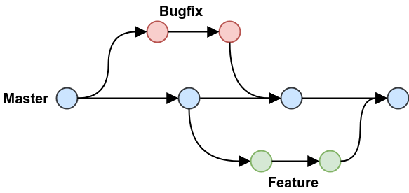

Using Git and branching greatly improves teamwork in coding projects by allowing multiple developers to work in parallel without interfering with each other’s changes. Branches provide isolated environments where features, fixes, or experiments can be developed independently. This prevents conflicts with the main codebase and makes integration smoother through pull requests and code reviews.
Teams can maintain a stable main branch while testing and refining work in separate branches. Git also tracks history, enabling easy rollback if needed. Overall, branching encourages collaboration, improves code quality, and ensures organized, efficient workflows in team-based software development.
This is the commands we used:
git commit -m "message"git switch branch-name